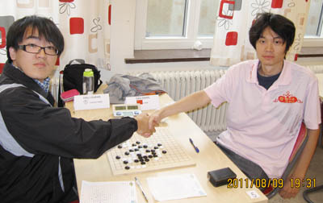

曹冬专访（二）：赛场风云
#1 曹冬专访（二）：赛场风云作者：被感动的人 发表时间：2011-8-24 22:26:28

（二）赛场风云
感动：很期待这样的情景能一次次出现。似乎世团赛前几轮是要内部相碰的？世锦赛是不是也这样才导致第一盘就内部人对上了？
曹冬：对，赛制是这样，同国家选手基本在赛事到一半之前全部互相碰完，所以这次抽签的时候，都是按国家上去抽，我们3一起过去抽，盒子里就3个号，1/*760*90，创建于2012-2-9*/ var cpro_id = 'u761865';
#2 Re:曹冬专访（二）赛场风云作者：被感动的人 发表时间：2011-8-24 22:27:02
我很郁闷，想配一张曹冬下棋时候的照片，居然没找到、、、#3 Re:曹冬专访（二）赛场风云作者：踵酃 发表时间：2011-8-24 22:28:57
 主编的文底功夫了得。 比小丸子的采访文字正规多了。
主编的文底功夫了得。 比小丸子的采访文字正规多了。#4 Re:曹冬专访（二）赛场风云作者：棋为何物 发表时间：2011-8-24 22:40:20
 学习
学习#5 Re:曹冬专访（二）赛场风云作者：以和为贵 发表时间：2011-8-24 22:46:54
严重同意三楼说法
#6 Re:曹冬专访（二）：赛场风云作者：蓝天蓝 发表时间：2011-8-24 23:23:23
以后多多学习妹妹了#7 Re:曹冬专访（二）：赛场风云作者：百无禁忌 发表时间：2011-8-25 7:32:46
好文章［ 被感动的人 于 2011-8-25 13:31:59 时奖励此帖[金币加 100 威望加1］0+1
［此帖子已被 被感动的人 在 2011-8-25 13:32:24 编辑过］
#8 Re:曹冬专访（二）：赛场风云作者：润土 发表时间：2011-8-25 8:59:51
再次顶礼膜拜冬瓜神！
#9 Re:曹冬专访（二）：赛场风云作者：will 发表时间：2011-8-25 12:09:19
阅。#10 Re:曹冬专访（二）：赛场风云作者：知易行难 发表时间：2011-8-25 14:11:21
挺佩服曹冬的，始终非常稳定的发挥着水平